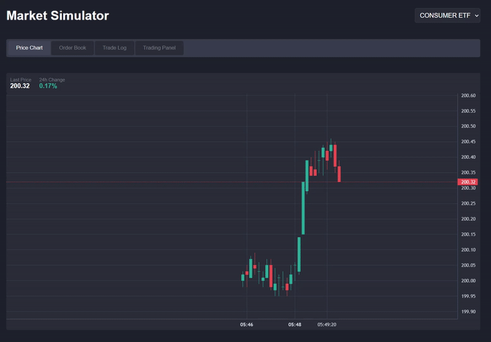

Ollama Market
Stock market simulation built to experiment with locally hosted LLM agents.

Overview
Ollama Market is a simulated stock exchange where autonomous LLM agents
place trades based on market conditions and news. The project was built to
explore the limits of local 8B parameter models in multi-agent environments.
Architecture
- Cython order-matching engine with ~2µs average latency
- Flask HTTP API serving market state and trades
- HTML/CSS/JS frontend for real-time visualization
- Local text-to-speech market commentators using Kokoro-82M
Engineering Challenges
- Reducing Python overhead in performance-critical paths
- Designing deterministic simulations despite stochastic LLM behavior
- Maintaining consistent state across concurrent agent actions
What I Learned
- How to identify and optimize bottlenecks using Cython
- Tradeoffs between simulation realism and determinism
- Evaluating LLM behavior beyond prompt quality
View on GitHub →